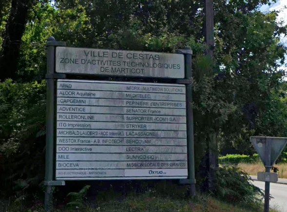
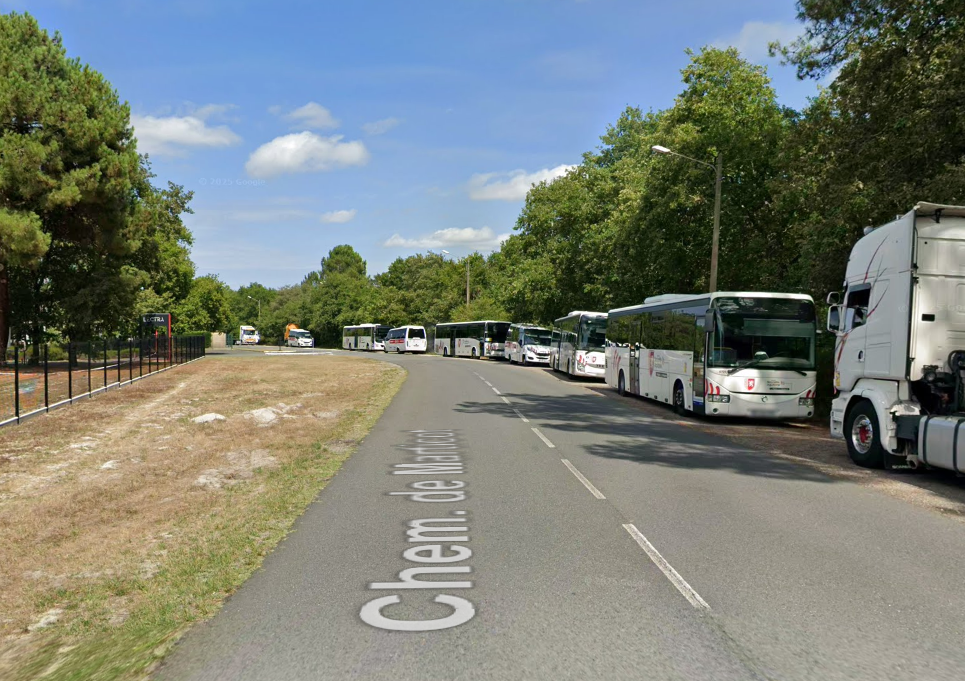

3. PERCEPTION GÉNÉRALE DE LA ZONE D’ACTIVITÉ DE MARTICOT
La perception qu’ont les salariés de cette zone d’activité offre un éclairage essentiel sur son fonctionnement quotidien, sa qualité d’aménagement et son attractivité en tant que lieu de travail. Au-delà des données économiques, il s’agit ici de comprendre comment la zone est vécue par ceux qui la pratiquent chaque jour : comment ils perçoivent ses qualités, ses manques, et les conditions qu’elle offre en matière de confort, d’accessibilité, de services ou d’ambiance. Notre objectif est de dresser un portrait sur les qualités de la zone mais aussi sur ces points faibles afin de cibler des axes d’améliorations mais surtout de comprendre la perception globale des salariés.

3.1 Dans quelle mesure les salariés trouvent la zone d’activité de Marticot ?
Sous forme de tableau, les répondants devaient donner une note d’appréciation de 1 à 6 sur différent adjectif qualificatif de la zone. L’objectif est de faire ressortir les caractéristiques globales pour mieux identifier les points faibles.
Les résultats montrent que la zone est perçue de manière nuancée. Elle est jugée moyennement attractive (moyenne 3,15/6) avec un écart-type de 1,24, ce qui traduit une dispersion modérée des réponses. Pour la convivialité on retrouve une moyenne plus basse de (2,92/6) avec 69,4% des répondants ayant donné une note entre 1 et 3. L’accessibilité est la modalité la moins bien évaluée avec une tendance négative (2,37/6) en moyenne, confirmant un ressenti de difficulté d’accès. À l’inverse, l’isolement est plutôt marqué (3,61/6), ce qui traduit une impression de coupure vis-à-vis de son environnement urbain. Cependant l’écart type de 1,64 (le plus élévé des 5) indique tout de même une importante dispersion. Avec 20,9% pour une note de 3 et 21,8% pour une note de 5. Cela peut traduire un isolement à relativiser. Enfin, la zone n’est pas jugée particulièrement obsolète (2,93/6), avec 71,9% des répondants ayant donné une note entre 1 et 3. Ces résultats traduisent une image mitigée de la zone de Marticot : si elle conserve une certaine attractivité économique, son manque de convivialité et surtout ses problèmes d’accessibilité apparaissent comme des points faibles majeurs. Le ressenti d’isolement dispersé renforce l’idée d’une zone fonctionnelle mais avec peut-être des problématiques d’intégration à son territoire.
3.2 Ressentez-vous des nuisances dans la ZAE de Marticot ?
Sur la question des nuisances, nous avons voulus savoir quels pourrez être les éléments pouvant rendre l’expérience négative dans le zone, ainsi impacter le quotidien des salariés. Sur l’ensemble des répondants, on retrouve une majorité de personnes ne trouvant pas que la zone d’activité de Marticot soit associés à une quelconque nuisance (71,4%). Cependant 27,7% soit presque 1/3 estiment ressentir des nuisances.
Dans l’élaboration de notre questionnaire, nous avons prédéfinis des catégories qui nous semblaient pertinentes et englobantes ; Les nuisances liées :
- À l’environnement bruyant
- À la circulation de poids lourd
- Au trafic routier et à la sécurité
- Aux odeurs
- À l’accessibilité
- Les nuisances
A savoir que les 3 dernières catégories ont étés rajoutés après avoir analyser les réponses libres des personnes ayant choisis de préciser dans « autre ».
Les résultats mettent en évidence une perception différenciée des nuisances parmi les salariés interrogés. Trois types de nuisances ressortent nettement :
- le trafic et la sécurité, cités par plus des trois quarts des répondants (77,8 %) ;
- le bruit, mentionné par 60,0 % ;
- et la circulation des poids lourds, évoquée par 53,3 %.
Ces résultats traduisent une sensibilité forte des usagers à la circulation routière et à ses conséquences directes, qu’il s’agisse du bruit, du trafic dense ou des poids lourds. À l’inverse, l’odeur, l’accessibilité et la pollution apparaissent comme beaucoup plus marginales comme nuisances. Mais celles-ci ont étés rajoutés à partir de la case autre qui permettaient de préciser d’autres nuisances non cités. Ainsi, les nuisances perçues dans la zone d’activité sont avant tout liées aux conditions de circulation et de sécurité, tandis que les nuisances environnementales plus classiques (pollution de l’air, odeurs) sont relativement peu mentionnées.
3.3 Selon vous la zone d’activité de Marticot est caractérisée par :
L’analyse des réponses montre une perception contrastée des différentes dimensions de la zone d’activité. Les salariés jugent positivement la qualité du réseau et la présence d’espaces verts, qui recueillent les meilleures moyennes (respectivement 4,23 et 4,17 sur 6). La majorité des répondants s’accorde à reconnaître ces atouts, même si l’écart-type un peu plus élevé pour les espaces verts laisse apparaître des avis plus dispersés selon les secteurs ou les usages.
La sécurité et la propreté sont évaluées de manière correcte, autour de 3,8 en moyenne. Ces résultats traduisent une appréciation globalement satisfaisante, (61,4% des notes allant de 4 à 6 pour la sécurité et 61,2% pour la propreté) mais il faut tout de même nuancer : certains salariés estiment ces dimensions convenables, quand d’autres expriment des réserves, ce que confirme la dispersion modérée des réponses.
En revanche, d’autres critères apparaissent beaucoup plus faibles. Les cheminements obtiennent une moyenne de 3,08, ce qui traduit une appréciation mitigée et assez hétérogène : les salariés sont partagés entre une relative fonctionnalité et des insuffisances perçues. Plus marquant encore, la convivialité (2,31) et la présence de services (2,38) ressortent comme les points les plus déficitaires. Les réponses sont ici fortement concentrées dans les modalités basses, ce qui montre un consensus autour d’un manque d’espaces favorisant d’une certaine manière la sociabilité et l’interaction grâce à des équipements de proximité dans la zone.
En résumé, si la ZA de Marticot est reconnue pour ses atouts en termes d’infrastructures et de cadre paysager, elle souffre d’un déficit marqué en services et en convivialité. La sécurité et la propreté sont jugées acceptables mais non pleinement satisfaisantes, et les cheminements apparaissent comme un élément à appronfondir/ valoriser. Cette lecture croisée des moyennes, des fréquences et de la dispersion des réponses met donc en lumière une zone perçue comme fonctionnelle et structurée, mais insuffisamment pensée pour le quotidien et la sociabilité des salariés.

3.4 Dans quelle mesure trouvez-vous la zone d’activité de Marticot ?
La qualité esthétique de la zone est jugée de manière mitigée par les salariés. La moyenne s’établit à 3,26/6, avec une médiane de 3, ce qui traduit une appréciation plutôt moyenne. La majorité des répondants se situe dans les notes intermédiaires (3 ou 4), tandis qu’environ un quart exprime une perception négative (notes 1 ou 2). À l’inverse, seuls 14 % évaluent positivement l’esthétisme (notes 5 ou 6). Ces résultats soulignent que l’environnement bâti de la ZAE n’est pas perçu comme un atout particulier et qu’il suscite au mieux une neutralité, au pire une certaine réserve.
3.5 Attachement aux espaces verts de la zone
Les salariés se déclarent majoritairement attachés aux espaces verts. La moyenne obtenue est de 4,7/6, avec une médiane à 5, et près des deux tiers des répondants attribuent une note de 5 ou 6 (soit 66 %). À l’inverse, seuls 10 % expriment un attachement faible (notes 1 ou 2). Cette distribution met en évidence un consensus positif : la présence des espaces verts est perçue comme un atout valorisé dans le quotidien des usagers.
3.6 État général des bâtiments
L’évaluation de l’état général des bâtiments est globalement correcte, avec une moyenne de 3,82/6 et une médiane de 4. Plus de la moitié des répondants se situent entre 4 et 5, traduisant une appréciation plutôt positive, tandis qu’une minorité (11 % environ) juge l’état dégradé (notes 1 ou 2). La dispersion limitée (écart-type de 1,11) montre que les salariés partagent une vision relativement homogène : les bâtiments ne sont pas considérés comme obsolètes, mais leur qualité n’est pas un facteur de satisfaction marqué.
3.7 Présence de friches ou locaux vacants
Une majorité de salariés (66,2 %) déclarent ne pas avoir remarqué de friches ou de locaux vacants sur la zone. Toutefois, près d’un tiers (30,3 %) indiquent en avoir observé “quelques-uns”, et 3,5 % mentionnent même “plusieurs” friches. Ces perceptions contrastées traduisent une situation intermédiaire : la présence de bâtiments inoccupés est visible mais reste limitée, suggérant une vigilance nécessaire pour éviter que ces espaces ne deviennent des points de fragilité ou n’altèrent l’image générale de la zone.
3.8 Si la zone d’activité de Marticot devait évoluer; pour vous elle devrait être :
Les résultats de la question A8 mettent clairement en évidence que les attentes prioritaires des salariés concernent avant tout la mobilité et l’accessibilité. Avec une moyenne de 4,95 sur 6 et un écart-type limité (1,15), cet item recueille un consensus très fort : plus de 70 % des répondants lui attribuent une note de 5 ou 6. Cette concentration des réponses illustre la centralité de la question des déplacements dans le quotidien des usagers de la zone.
Viennent ensuite les services disponibles, qui apparaissent eux aussi comme un enjeu majeur d’évolution. La moyenne atteint 4,85, avec une médiane de 5 et un écart-type faible (1,14), traduisant une convergence d’opinions. Une large majorité de salariés exprime le besoin de voir se développer l’offre de restauration, de commerces et de services de proximité, confirmant l’importance de ce levier dans l’amélioration de la qualité de vie au travail. La signalétique arrive en troisième position avec une moyenne de 4,40. Bien que moins prioritaire que la mobilité ou les services, elle est tout de même jugée nécessaire par une majorité de répondants. L’écart-type légèrement plus élevé (1,31) témoigne cependant d’une certaine dispersion : certains salariés considèrent la signalétique comme un point faible de la zone, tandis que d’autres ne l’identifient pas comme un enjeu majeur. La qualité architecturale est également évoquée, avec une moyenne de 4,07 et une médiane de 4. L’écart-type de 1,27 suggère une diversité de perceptions : une partie des salariés souhaite une amélioration du bâti et de l’image architecturale, tandis qu’une autre estime que ce n’est pas une priorité. Enfin, les espaces verts arrivent en dernière position, avec une moyenne de 3,77. Cet item, qui avait pourtant suscité un fort attachement en A5, apparaît ici comme moins urgent dans les évolutions attendues. L’écart-type de 1,33 traduit des avis assez hétérogènes : certains salariés semblent satisfaits de l’existant, tandis que d’autres souhaitent davantage de valorisation paysagère.
Dans l’ensemble, ces résultats traduisent une hiérarchisation nette des attentes : l’amélioration des conditions de déplacement et de l’offre de services constitue la priorité des salariés, suivie par des besoins intermédiaires en matière de signalétique et d’architecture, tandis que la dimension paysagère, bien qu’appréciée, est reléguée au second plan dans les demandes de transformation.
3.9 Quels services vous seraient utiles ?
La question A9 visait à identifier les services jugés utiles par les salariés de la zone d’activité de Marticot. La difficulté était de cibler des axes de services sans pour autant demander explicitement les besoins. Cette approche peut-être biaiser puisque les personnes peuvent en effet vouloir des équipements dont ils ne se serviront pas forcément ou jugeant que c’est nécessaire pour la qualité de vie dans la ZAE mais sans que ce le soit necessairement. C’est pour cela que nous avons cibler des services « utiles » afin cadrer les attentes et avoir des réponses crédibles. Les résultats montrent des attentes différenciées selon les types de services proposés.
Tout d’abord, le service le plus plébiscité est la restauration : 72,3 % des répondants déclarent qu’un restaurant ou une offre alimentaire leur serait utile. Cette forte demande traduit un besoin central de lieux de convivialité et de solutions pratiques pour la pause déjeuner, dans une zone où l’offre semble insuffisante au regard du nombre de salariés. Cela rejoint également les résultats de la partie E du questionnaire sur la pause déjeuner, où beaucoup de salariés expriment des contraintes liées au temps et à l’accessibilité de la restauration.
Ensuite, près de la moitié des répondants (44 %) estiment qu’une offre sportive serait un service utile. Cette donnée témoigne d’une attente significative en matière de qualité de vie au travail et de possibilités de pratiquer une activité physique à proximité immédiate du lieu d’emploi, ce qui rejoint les tendances actuelles d’entreprises cherchant à promouvoir la santé et le bien-être des salariés.
Les services médicaux (36,9 %) arrivent en troisième position. Plus d’un tiers des salariés jugent utile de pouvoir accéder à des soins directement sur site ou à proximité, ce qui reflète une volonté de simplifier la gestion du temps et de limiter les déplacements pour ce type de besoins essentiels.
En revanche, les autres services apparaissent comme secondaires dans les réponses :
- Services à la personne : 29,2 %
- Supermarché : 30,5 %
- Garde d’enfant : 27,4 %
Ces résultats montrent que, bien que ces services intéressent une partie non négligeable des salariés, ils restent moins prioritaires que la restauration, le sport ou la santé. Leur utilité est sans doute perçue comme plus contextuelle ou dépendante de la situation personnelle des salariés (présence d’enfants à charge, organisation familiale, habitudes de consommation).